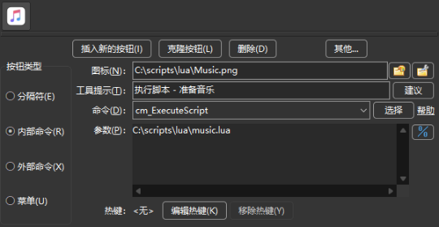
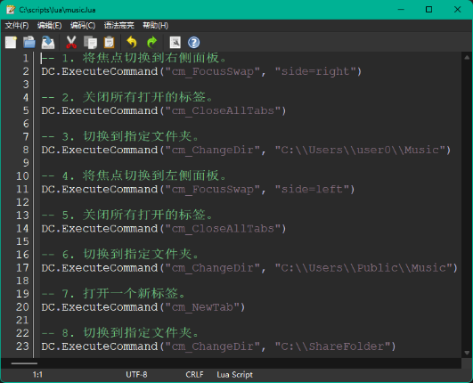
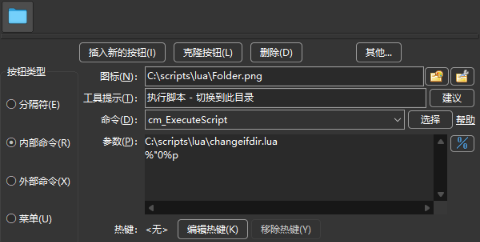
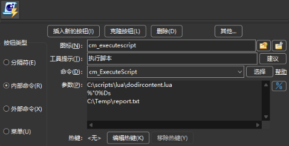
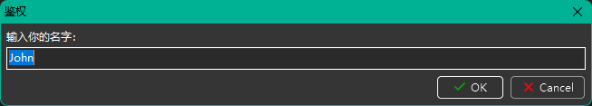

有关 Lua 脚本语言的详细信息，请参阅 Lua 官方网站。
Double Commander 可以通过 cm_ExecuteScript 命令执行 Lua 脚本。
脚本参数必须原样传递，不要进行转义（不要加引号或 "\"），为此需要使用 %"0 变量：例如，用 %"0%p0 表示光标下的文件（而非 %p0），或用 %"0%D 表示当前目录（而非 %D）。否则如果 Double Commander 自动添加了引号，引号会作为参数的一部分被传入，脚本中需考虑这一点。
要获取所有选中文件的列表，可以使用 变量（%LU、%FU 或 %RU），也可以使用内部命令（cm_SaveSelectionToFile、cm_SaveFileDetailsToFile、cm_CopyFullNamesToClip 或 cm_CopyFileDetailsToClip）。
例如可以使用 %p：这种情况下，Double Commander 会将所有选中的文件的名称放在同一行，并用空格分隔。
也可以使用 Lua 编写内容插件（content plugins），示例位于程序目录的 plugins/wdx/scripts 下。 Wiki 有一页专门简介插件编写：插件开发。 限制：仅支持以下数据类型：
以上列表包含头文件中的名称，在 Lua 脚本中，我们必须使用括号中指定的数值。
关于文本编码
下面描述的所有附加函数都接受 UTF-8 编码的字符串参数，并以 UTF-8 编码返回字符串（LazUtf8.ConvertEncoding 除外）。
部分标准 Lua 库函数已由 Double Commander 或 Free Pascal/Lazarus 的函数替换（或新增实现），以提供对 UTF-8 的支持。
编写插件时，也应对文本数据（ft_multiplechoice、ft_string 和 ft_fulltext）使用 UTF-8 编码。
保存脚本时请使用不带 BOM 的 UTF-8 编码。
注意事项
使用 Lua 自动化功能可以完成很多事情，但也有一些需要注意的细节，下面收集了一些常见的注意点。
1. 如果启用了自动刷新和在单独线程中加载文件列表选项，则刷新会以异步方式执行。而脚本在 Double Commander 的主线程中运行，因此在某些情况下可能会影响脚本的行为。例如，有时顺序执行的导航命令可能不起作用（例如目录很大或磁盘很慢），遇到这种情况可以尝试禁用“在单独线程加载文件列表”或寻找替代方案。
如果脚本在当前面板创建了新文件或重命名了已有文件，但脚本没有结束而继续执行其他操作（例如选择文件或移动光标），这些后续操作有时不会生效：因为面板中的文件列表尚未全部更新，此时需要先调用cm_Refresh命令。在上述情况下，cm_Refresh 也可能是异步执行的，Double Commander 可能无法在你的后续操作执行前完成刷新。
自动刷新与在独立线程加载文件列表是文件管理器中很实用的功能。实践中发现一种比较稳妥的方法是短暂让出控制权，等待文件列表完成刷新，示例如下：
DC.ExecuteCommand("cm_Refresh") i = 10 while i > 0 do SysUtils.Sleep(10) DC.ExecuteCommand("") i = i - 1 end
2. Lua 的 io.open 使用标准 C 函数 fopen：在文本模式下，该函数在读写时可能会转换行结束符（CRLF、LF 或 CR），这会导致意外结果。如果遇到具有不同类型行结束符的文件或编写跨平台脚本时，应注意此点，通常更稳妥的做法是使用二进制模式。
3. 在 Linux 和其它类 Unix 系统中，用于 显示文件属性... 对话框的 ContentGetValue 函数会以 CONTENT_DELAYIFSLOW 标志（第四个参数，值为 1）调用，这样可以避免窗口打开时的长时间等待：如果数据检索较慢，可以通过检查该标志并为这些字段或插件返回 nil 来排除它们。
4. 如果插件需要返回空字符串，传递 nil 通常比传递 "" 更快。
要解释并运行 Lua 脚本，系统需要安装相应的 Lua 动态链接库（DLL / shared library），Double Commander 支持 Lua 5.1 至 5.4。
可以使用来自 LuaJIT 项目 的库文件。LuaJIT 提供高性能的解释器与 JIT 编译器，并包含 FFI 库，允许从纯 Lua 代码调用外部 C 函数和使用 C 数据结构。
Windows 版的 DC 发行包通常默认包含 Lua DLL（从 DC 0.9.7 起采用 LuaJIT），其他情况下可以通过包管理器安装或自行编译。如果使用 64 位的 DC，则需要对应的 64 位 Lua 库。
默认情况下，DC 在其程序目录和系统目录中查找名为 lua5.1.dll（Windows）、liblua5.1.so.0（Unix / Linux）或 liblua5.1.dylib（macOS）的文件。也可以在配置中通过 要使用的 Lua 库文件 参数更改库文件名或路径。
Double Commander 为 Lua 脚本提供了若干函数库。
下面列出这些库：
| 库列表 | ||
|---|---|---|
| 库名 | 脚本名 | 简要说明 |
| DC | Double Commander 特有的函数 | |
| SysUtils | 各种系统相关函数 | |
| Clipbrd | 提供与系统剪贴板交互的功能 | |
| Dialogs | 与用户交互（消息、输入等） | |
| LazUtf8 | UTF-8 字符串相关函数 | |
| Char | 获取字符的 Unicode 类别与相关检查 | |
| os | 与操作系统相关的函数 | |
该库包含 Double Commander 特有的函数。
所有函数都包装在 DC 表中。
| DC 库 | |
|---|---|
| 函数名 | 说明 |
|
DC.LogWrite(sMessage, iMsgType, bForce, bLogFile) 向日志窗口写入一条消息：
|
|
|
iPanel = DC.CurrentPanel() 获取活动面板：如果左侧面板是活动的返回 0，右侧返回 1。 DC.CurrentPanel(iPanel) 设置活动面板：当 iPanel 为 0 时切换到左侧面板，为 1 时切换到右侧面板。 |
|
|
DC.ExecuteCommand(sCommand, Param1, Param2,...,ParamX) 允许脚本调用 Double Commander 的 内部命令。 sCommand 为内部命令的名称。 可以按需提供多个 Param... 参数，具体取决于命令支持的参数数量。 |
|
除了内部命令外，脚本中还可以使用特殊命令 cm_ExecuteToolBarItem，该命令允许通过标识符调用工具栏按钮（程序内可用于给工具栏按钮绑定快捷键）。该命令的用法与一般内部命令类似（见下例），参数如下：
| 参数 | 取值 | 说明 |
|---|---|---|
| ToolBarID | TfrmOptionsToolbar | 主工具栏上的按钮 |
| TfrmOptionsToolbarMiddle | 中间工具栏上的按钮 | |
| (缺省) | 主工具栏上的按钮（当未指定时） | |
| ToolItemID | 标识符 | 按钮的唯一标识符 |
按钮的唯一标识符存储在 ID 标签中。获取方法包括：在 doublecmd.xml 中查找、查看工具栏备份文件，或将按钮复制到剪贴板然后粘贴到文本编辑器以读取其代码。
注意：标识符通常由程序自动生成，不需要与另一台程序实例中的相似按钮保持一致；如有需要也可以手动设置自定义标识符。
下面示例脚本执行以下操作：
-- 1. 将焦点切换到右侧面板。 DC.ExecuteCommand("cm_FocusSwap", "side=right") -- 2. 关闭所有打开的标签。 DC.ExecuteCommand("cm_CloseAllTabs") -- 3. 切换到指定文件夹。 DC.ExecuteCommand("cm_ChangeDir", "C:\\Users\\user0\\Music") -- 4. 将焦点切换到左侧面板。 DC.ExecuteCommand("cm_FocusSwap", "side=left") -- 5. 关闭所有打开的标签。 DC.ExecuteCommand("cm_CloseAllTabs") -- 6. 切换到指定文件夹。 DC.ExecuteCommand("cm_ChangeDir", "C:\\Users\\Public\\Music") -- 7. 打开一个新标签。 DC.ExecuteCommand("cm_NewTab") -- 8. 切换到指定文件夹。 DC.ExecuteCommand("cm_ChangeDir", "C:\\ShareFolder")
可以使用内部命令 cm_ExecuteScript 在工具栏上配置一个按钮来执行脚本。
假设脚本文件为 C:\scripts\lua\music.lua，可以将按钮按如下方式配置：

此外，可以使用 Double Commander 内置的编辑器来编辑脚本。若文件名以 .lua 结尾，内置编辑器会识别并提供 Lua 语言的语法高亮：

该库包含各种系统相关函数。
所有函数都包装在 SysUtils 表中。
| 系统库 | |||||||||||
|---|---|---|---|---|---|---|---|---|---|---|---|
| 函数名 | 说明 | ||||||||||
|
SysUtils.Sleep(iMilliseconds) 暂停脚本执行指定的 iMilliseconds 毫秒。 |
|||||||||||
|
SysUtils.GetTickCount() 返回递增的时钟滴答计数，可用于时间测量，但不应对滴答间隔作严格假设。 |
|||||||||||
|
bExists = SysUtils.FileExists(sFileName) 检查指定文件是否存在于文件系统中。 如果磁盘上存在名为 sFileName 的文件，则在 bExists 中返回 |
|||||||||||
|
bExists = SysUtils.DirectoryExists(sDirectory) 检查 sDirectory 是否存在且确为目录。 若是则返回 bExists 为 |
|||||||||||
|
iAttr = SysUtils.FileGetAttr(sFileName) 在 iAttr 中返回文件 sFileName 的属性设置。 有关返回值的详细说明见 此处。 |
|||||||||||
|
Handle, FindData = SysUtils.FindFirst(sPath) 查找匹配 sPath（通常包含通配符）的文件。 如果未找到任何文件，Handle 将为 如果找到至少一个项目，返回的 Handle 可用于随后的 FindData 表包含有关找到的文件或目录的信息。 FindData 表的字段包括：
|
|||||||||||
|
Result, FindData = SysUtils.FindNext(Handle) 使用之前返回的 Handle 查找由 如果找到文件或目录，返回的 Result 将非 nil，否则为 关于 注意： 每次最后的 |
|||||||||||
|
SysUtils.FindClose(Handle) 结束一系列 释放这些调用占用的内存。 务必调用此函数，否则可能会发生内存泄漏。 |
|||||||||||
|
bResult = SysUtils.CreateDirectory(sDirectory) 创建目录链，sDirectory 为目标目录的完整路径。 如果目录已存在或创建成功则返回 |
|||||||||||
|
bResult = SysUtils.CreateHardLink(sFileName, sLinkName) 为文件 sFileName 创建硬链接 sLinkName。 成功返回 |
|||||||||||
|
bResult = SysUtils.CreateSymbolicLink(sFileName, sLinkName) 为文件或目录 sFileName 创建符号链接 sLinkName。 成功返回 |
|||||||||||
|
sTarget = SysUtils.ReadSymbolicLink(sLinkName, bRecursive) 读取符号链接 sLinkName 的目标路径。 如果 bRecursive 为 返回符号链接指向的路径；当链接无效或目标不存在且 bRecursive 为 |
|||||||||||
|
sName = SysUtils.ExtractFileName(sFileName) 从完整路径中提取文件名部分。 文件名为最后一个目录分隔符（"/" 或 "\"）或盘符之后的所有字符。 |
|||||||||||
|
sExt = SysUtils.ExtractFileExt(sFileName) 返回文件的扩展名（最后一个点之后的所有字符，包含点字符）。 |
|||||||||||
|
sPath = SysUtils.ExtractFilePath(sFileName) 从文件名中提取路径部分（包含盘符）。 路径为最后一个目录分隔符（"/" 或 "\"）之前的所有字符，包含该分隔符本身。 |
|||||||||||
|
sDir = SysUtils.ExtractFileDir(sFileName) 仅提取 sFileName 的目录部分，包含盘符。 该目录名不包含结尾的目录分隔符，这点不同于 |
|||||||||||
|
sDrive = SysUtils.ExtractFileDrive(sFileName) 从文件名中提取盘符部分。 注意，某些操作系统不支持盘符概念。 |
|||||||||||
|
sName = SysUtils.GetAbsolutePath(sFileName, sBaseDirectory) 返回文件的绝对（完整）路径：
如果无法获得绝对路径，函数将返回原始的 sFileName 值。 |
|||||||||||
|
sName = SysUtils.GetRelativePath(sFileName, sBaseDirectory) 返回相对于指定目录的文件名：
如果 sFileName 与 sBaseDirectory 相同，函数将返回空字符串（""）。若无法计算相对路径，则返回原始的 sFileName 值。 |
|||||||||||
|
bResult = SysUtils.MatchesMask(sFileName, sMask, iMaskOptions) 如果 sFileName 与给定掩码 sMask 匹配则返回 iMaskOptions（可选，默认值 0）由以下值相加而成：
|
|||||||||||
|
bResult = SysUtils.MatchesMaskList(sFileName, sMaskList, sSeparator, iMaskOptions) 如果 sFileName 与以 sSeparator 分隔的掩码列表 sMaskList 中的任一项匹配，则返回 sSeparator and iMaskOptions (see above) are optional parameters. |
|||||||||||
|
sTempFileName = SysUtils.GetTempName() 返回一个可作为临时文件名的路径（位于系统临时目录下的子目录中）。与 os.tmpname 类似，但本函数会把临时文件放在一个子目录中，该子目录在 Double Commander 关闭时会被自动删除。若无法生成唯一名称，则返回空字符串。 |
|||||||||||
|
SysUtils.PathDelim 当前操作系统用于分隔路径中目录名称的字符。 在 Unix/Linux 系统上为 "/"，在 Windows 上为 "\"。 |
|||||||||||
FileGetAttr 返回文件 sFileName 的属性设置。
属性值是通过按位或（OR）组合以下常量得到的：
| SysUtils.FileGetAttr 返回值中使用的常量 | |
|---|---|
| 值 | 含义 |
0x00000001 faReadOnly |
文件为只读。 |
0x00000002 faHidden |
文件为隐藏文件。 在 Unix/Linux 中，这通常意味着文件名以点号（.）开头。 |
0x00000004 faSysFile |
系统文件。 在 Unix/Linux 中，这通常表示该文件是字符或块设备、命名管道 (FIFO) 等。 |
0x00000008 faVolumeId |
卷标。 仅适用于旧式 FAT 文件系统（非 VFAT 或 FAT32）的 DOS/Windows。 |
0x00000010 faDirectory |
表示该条目为目录。 |
0x00000020 faArchive |
归档位（标记为已归档）。 在 Unix/Linux 中无此概念。 |
0x00000400 faSymLink |
表示该条目为符号链接。 |
| 注意：发生错误时，函数返回 -1。 | |
示例见 下一节。
下面的脚本演示了如何使用 SysUtils.FileGetAttr。
如果检测到传入参数是目录，脚本将会在活动面板中打开一个新标签并切换到该目录。
local params = {...} local iAttr if #params == 1 then -- 我们至少得到了一个参数？ iAttr = SysUtils.FileGetAttr(params[1]) if iAttr > 0 then -- 我们得到了一个有效的属性？ if math.floor(iAttr / 0x00000010) % 2 ~= 0 then -- 第4位被置位？那么它是一个目录。 DC.ExecuteCommand("cm_NewTab") DC.ExecuteCommand("cm_ChangeDir", params[1]) end end end
在上例中，params[1] 是传递给脚本的第一个参数。
使用内部命令 cm_ExecuteScript 时，该参数会作为脚本文件名之后的第一个参数传入。
因此在本示例中，我们可以为工具栏配置类似的按钮：

在本示例中，参数 %"0%p 会被传递给脚本。该参数表示（不带引号）在我们按下工具栏按钮时活动面板中当前选中的项目的文件名。
下面的脚本示例会扫描传入参数指定的目录内容，并将结果写入第二个参数指定的文本文件中。
该示例展示了如何使用 FindFirst、FindNext 和 FindClose。
local params = {...} if #params == 2 then -- 我们得到了两个参数？ local Result = nil local hOutputFile = nil hOutputFile = io.output(params[2]) local Handle, FindData = SysUtils.FindFirst(params[1] .. "\\*") if Handle ~= nil then repeat io.write(FindData.Name .. "\r") io.write(FindData.Size .. "\r") io.write("---------------\r") Result, FindData = SysUtils.FindNext(Handle) until Result == nil SysUtils.FindClose(Handle) io.close(hOutputFile) end end
在上例中，需要向脚本传入两个参数：
因此可以通过内部命令 cm_ExecuteScript 配置一个工具栏按钮并传入这些参数来完成此操作。

在本示例中，参数 %"0%Ds 将作为第一个参数传递给脚本。该参数表示（不带引号）活动面板当前显示的目录。
Double Commander 为 Lua 脚本提供与系统剪贴板交互的功能。
下面的表格列出了相关函数：
| 剪贴板库 | |
|---|---|
| 函数名 | 说明 |
|
Clipbrd.Clear() 清空剪贴板内容。 |
|
|
sVar = Clipbrd.GetAsText() 获取剪贴板当前的文本内容并返回到 sVar。如果剪贴板不包含文本，则返回空字符串。 |
|
|
Clipbrd.SetAsText(sVar) 将字符串 sVar 的文本内容存入剪贴板。 |
|
|
Clipbrd.SetAsHtml(sHtml) 将 HTML 格式的文本 sHtml 添加到剪贴板（采用 支持该剪贴板格式的应用（如 MS Word、LibreOffice Writer 等）在粘贴时会使用该格式。 可以同时使用 例如：
如果在记事本中粘贴，将得到纯文本（由 |
|
下面的示例使用了与剪贴板相关的三个函数：Clear, GetAsText 和 SetAsText。
脚本相对较长，但示例把我们前面见过的若干函数组合在一起，便于理解它们如何协同工作。
假设当前活动面板所在目录中包含大量源文本文件。
假设剪贴板中最初包含一个单词，并且脚本会接收当前活动文件夹作为单一参数。
脚本会扫描该目录下的文件，逐个读取文件内容以检测是否存在包含剪贴板中单词的文本行。
随后，所有包含至少一行匹配文本的文件名将被放入剪贴板。
然后脚本将使用内部命令 cm_LoadSelectionFromClip，这样包含匹配单词的文件就会被选中。
最后，脚本会把原本用于搜索的单词恢复回剪贴板中。
local params = {...} local Result = nil local iAttr local bFound = false local sCompleteFilename = "" local hInputFile = nil local sLine = "" local iPosS local iPosE local sFileToSelect = "" local sSearchString = "" if #params == 1 then -- 我们得到了我们的参数？ sSearchString = Clipbrd.GetAsText() -- 搜索表达式。 Clipbrd.Clear() -- 确保我们的剪贴板无内容。 DC.ExecuteCommand("cm_MarkUnmarkAll") -- 确保没有选中项。 -- 逐个扫描文件夹内的所有文件。 local Handle, FindData = SysUtils.FindFirst(params[1] .. "\\*") if Handle ~= nil then repeat sCompleteFilename = params[1] .. "\\" .. FindData.Name iAttr = SysUtils.FileGetAttr(sCompleteFilename) if iAttr > 0 then -- 我们得到了一个有效的属性？ -- 我们需要文件，不是文件夹！ if math.floor(iAttr / 0x00000010) % 2 == 0 then -- 逐行读取文件，直到文件末尾或找到匹配项为止。 hInputFile = io.open(sCompleteFilename, "r") bFound = false while bFound == false do sLine = hInputFile:read() if sLine == nil then break end iPosS, iPosE = string.find(sLine, sSearchString) if iPosS ~= nil then bFound = true end end if bFound == true then sFileToSelect = sFileToSelect .. FindData.Name .. "\n" end io.close(hInputFile) end end Result, FindData = SysUtils.FindNext(Handle) until Result == nil SysUtils.FindClose(Handle) end -- 如果我们找到什么，选中它！ if sFileToSelect ~= "" then Clipbrd.SetAsText(sFileToSelect) DC.ExecuteCommand("cm_LoadSelectionFromClip") end Clipbrd.SetAsText(sSearchString) -- 恢复剪贴板内容。 end
该库允许脚本与用户交互，显示消息、提示输入等。
下面的表格列出相关函数：
| 对话框库 | |
|---|---|
| 函数名 | 说明 |
|
iButton = Dialogs.MessageBox(sMessage, sTitle, iFlags) 显示一个消息框，用户按下的按钮会作为返回值返回： |
|
|
bResult, sAnswer = Dialogs.InputQuery(sTitle, sMessage, bMask, sDefault) 显示一个请求输入的对话框，用户可以输入字符串值：
|
|
|
sItem, iItem = Dialogs.InputListBox(sTitle, sMessage, aItems, sDefault) 显示一个供用户从列表中选择的对话框：
|
|
Dialogs.MessageBox 中显示的按钮由按位或组合的标志控制，常见值如下：
| Dialogs.MessageBox 显示按钮相关的常量 | |
|---|---|
| 常量值 | 显示的按钮（从左到右） |
0x0000 MB_OK |
|
0x0001 MB_OKCANCEL |
|
0x0002 MB_ABORTRETRYIGNORE |
|
0x0003 MB_YESNOCANCEL |
|
0x0004 MB_YESNO |
|
0x0005 MB_RETRYCANCEL |
|
Dialogs.MessageBox 的图标与样式由按位或组合的常量控制，常见值如下：
| Dialogs.MessageBox 图标与窗口样式相关的常量 | |
|---|---|
| 常量值 | 窗口样式 |
0x0040 MB_ICONINFORMATION |
|
0x0030 MB_ICONWARNING |
|
0x0020 MB_ICONQUESTION |
确认窗口 |
0x0010 MB_ICONERROR |
错误窗口 |
Dialogs.MessageBox 的默认活动按钮由按位或组合的常量控制，常见值如下：
| Dialogs.MessageBox 默认按钮相关的常量 | |
|---|---|
| 常量值 | 默认按钮 |
0x0000 MB_DEFBUTTON1 |
默认为最左侧的按钮 |
0x0100 MB_DEFBUTTON2 |
默认为从左数第二个按钮 |
0x0200 MB_DEFBUTTON3 |
默认为从左数第三个按钮 |
Dialogs.MessageBox 返回的数值表示用户按下了哪个按钮，含义如下：
| Dialogs.MessageBox 返回值与按下按钮的对应关系 | |
|---|---|
| 常量值 | 按下的按钮 |
0x0000 mrNone |
无按钮被按下 |
0x0001 mrOK |
|
0x0002 mrCancel |
|
0x0003 mrAbort |
|
0x0004 mrRetry |
|
0x0005 mrIgnore |
|
0x0006 mrYes |
|
0x0007 mrNo |
|
注意：如果点击窗口右上角的“×”或按 Esc 关闭窗口，函数将返回“取消”按钮的值。
下面是一个使用 Dialogs.MessageBox 的小脚本及其将显示的窗口：
-- 显示的按钮 MB_OK = 0x0000 MB_OKCANCEL = 0x0001 MB_ABORTRETRYIGNORE = 0x0002 MB_YESNOCANCEL = 0x0003 MB_YESNO = 0x0004 MB_RETRYCANCEL = 0x0005 -- 窗口样式 MB_ICONINFORMATION = 0x0040 MB_ICONWARNING = 0x0030 MB_ICONQUESTION = 0x0020 MB_ICONERROR = 0x0010 -- 默认按钮 MB_DEFBUTTON1 = 0x0000 MB_DEFBUTTON2 = 0x0100 MB_DEFBUTTON3 = 0x0200 -- 按钮按下的返回值 mrNone = 0x0000 mrOK = 0x0001 mrCancel = 0x0002 mrAbort = 0x0003 mrRetry = 0x0004 mrIgnore = 0x0005 mrYes = 0x0006 mrNo = 0x0007 iFlags = MB_YESNO + MB_ICONQUESTION + MB_DEFBUTTON2 iButton = Dialogs.MessageBox("你想退出吗？", "询问", iFlags) if iButton == mrYes then DC.ExecuteCommand("cm_Exit") end
下面是一个使用 Dialogs.InputQuery 的示例脚本及其显示的窗口：
bResult, sAnswer = Dialogs.InputQuery("鉴权", "输入你的名字：", false, "John") if bResult == true then Dialogs.MessageBox("你好 " .. sAnswer .. "！", "欢迎光临！", 0x0040) end

该库为 UTF-8 编码提供基本支持。
所有函数都包含在表 LazUtf8 中。
| UTF-8 库 | |
|---|---|
| 函数名 | 说明 |
|
iResult = LazUtf8.Pos(SearchText, SourceText, Offset) 在字符串中从指定位置查找子串，区分大小写。 返回从位置 Offset（默认 1）开始在 SourceText 中首次出现 SearchText 的位置。 若在指定位置之后未找到子串，则返回 0。 |
|
|
LazUtf8.Next(String) 一个迭代器函数，每次调用返回字符串 String 中的下一个字符及该字符在字节流中的起始位置。 示例： -- 以“位置 : 字符”的形式打印数值对 for iPos, sChar in LazUtf8.Next(String) do DC.LogWrite(iPos .. " : " .. sChar) end |
|
|
sResult = LazUtf8.Copy(String, iIndex, iCount) 复制字符串的一部分。 返回从位置 iIndex 开始的 iCount 个字符组成的新字符串。 若 iCount 大于字符串长度则会截断；若 iIndex 超出字符串长度则返回空字符串。 |
|
|
iResult = LazUtf8.Length(String) 返回字符串中 UTF-8 字符的个数（字符数，而非字节数）。 |
|
|
sResult = LazUtf8.UpperCase(String) 把字符串中的小写字母转换为大写并返回转换后的字符串副本。 |
|
|
sResult = LazUtf8.LowerCase(String) 把字符串中的大写字母转换为小写并返回转换后的字符串副本。 |
|
|
sResult = LazUtf8.ConvertEncoding(String, FromEnc, ToEnc) 将 String 的编码从 FromEnc 转换为 ToEnc。 支持的编码列表：
在 Windows 系统中（以英语或俄语区域为例）：
|
|
|
sEnc = LazUtf8.DetectEncoding(String) 检测并返回传入文本的编码类型。支持的编码与 |
|
该库提供检查字符所属 Unicode 类别以及获取字符类别的函数。
本库中可用的函数列表：
| 字符库 | |||||||||||||||||||||||||||||||||||||||||||||||||||||||||||||||||||||||||||||
|---|---|---|---|---|---|---|---|---|---|---|---|---|---|---|---|---|---|---|---|---|---|---|---|---|---|---|---|---|---|---|---|---|---|---|---|---|---|---|---|---|---|---|---|---|---|---|---|---|---|---|---|---|---|---|---|---|---|---|---|---|---|---|---|---|---|---|---|---|---|---|---|---|---|---|---|---|---|
| 函数名 | 说明 | ||||||||||||||||||||||||||||||||||||||||||||||||||||||||||||||||||||||||||||
|
iResult = Char.GetUnicodeCategory(Character) 返回字符
|
|||||||||||||||||||||||||||||||||||||||||||||||||||||||||||||||||||||||||||||
|
bResult = Char.IsDigit(Character) 如果 Character 属于十进制数字类别（Nd），则返回 |
|||||||||||||||||||||||||||||||||||||||||||||||||||||||||||||||||||||||||||||
|
bResult = Char.IsLetter(Character) 如果 Character 属于字母类（Lu、Ll、Lt、Lm 或 Lo），则返回 |
|||||||||||||||||||||||||||||||||||||||||||||||||||||||||||||||||||||||||||||
|
bResult = Char.IsLetterOrDigit(Character) 如果 Character 属于字母或数字类别（Lu、Ll、Lt、Lm、Lo、Nd 或 Nl），则返回 |
|||||||||||||||||||||||||||||||||||||||||||||||||||||||||||||||||||||||||||||
|
bResult = Char.IsLower(Character) 如果 Character 属于小写字母类别（Ll），则返回 |
|||||||||||||||||||||||||||||||||||||||||||||||||||||||||||||||||||||||||||||
|
bResult = Char.IsUpper(Character) 如果 Character 属于大写字母类别（Lu），则返回 |
|||||||||||||||||||||||||||||||||||||||||||||||||||||||||||||||||||||||||||||
此外，这些函数也支持两个参数的形式：与其传入单个字符，也可以提供一个字符串以及该字符在字符串中的位置来进行检测。
该库包含与运行 Double Commander 的操作系统相关的函数。
下面是本库中可用函数的列表：
| 操作系统库 | |
|---|---|
| 函数名 | 说明 |
|
iResultCode = os.execute(sCommand) 在命令行中执行 sCommand，并返回操作的返回码。 sCommand 可以是：
|
|
|
sTempFileName = os.tmpname() 返回一个可用于临时文件的文件名（位于系统临时目录）。若无法创建唯一名称，则返回空字符串。 |
|
|
bResult, sError, iError = os.remove(sFileName) 删除名为 sFileName 的文件或目录。 成功时函数返回
|
|
|
bResult, sError, iError = os.rename(sOldName, sNewName) 将文件 sOldName 重命名为 sNewName。 注意： 若目标文件 sNewName 已存在，将被覆盖！ 成功时返回 |
|
|
Value = os.getenv(VariableName) 返回环境变量 VariableName 的值；若该变量不存在，则返回 |
|
|
os.setenv(VariableName, Value) 添加或修改环境变量 VariableName 的值。发生错误时函数返回 -1。 |
|
|
os.unsetenv(VariableName) 移除环境变量 VariableName。发生错误时函数返回 -1。 |
|